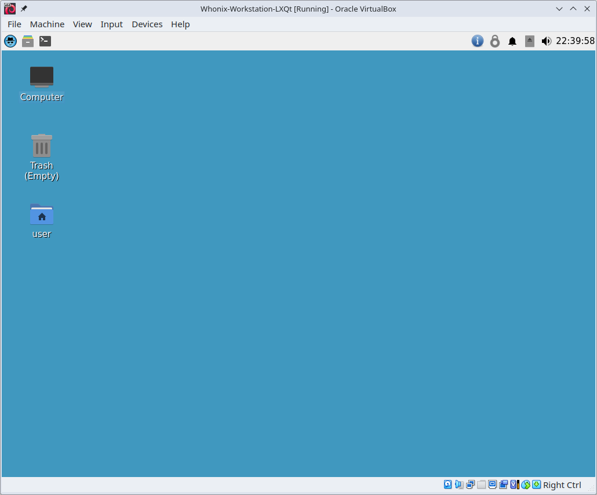

We believe security software like Whonix needs to remain Open Source and independent. Would you help sustain and grow the project? Learn more about our 11 year success story and maybe DONATE!
Whonix-GatewayDocumentationComparison of Whonix-Gateway and Whonix-WorkstationPrevious page: Whonix-GatewayIndex page: DocumentationNext page: Comparison of Whonix-Gateway and Whonix-WorkstationWhat is Whonix-Workstation™?

Whonix-Workstation is a software component of Whonix designed to provide users with a secure and anonymous environment for running applications and performing online tasks.
Whonix-Workstation Overview
Whonix-Workstation is a software component of Whonix, which is designed to provide users with a secure and anonymous environment for running applications and performing online tasks. Once installed, Whonix-Workstation is connected to Whonix-Gateway, which runs Tor processes and acts as a gateway, while Whonix-Workstation runs user applications on a completely isolated network.
All user applications, such as Tor Browser, should be launched from
Whonix-Workstation to ensure they utilize the Tor network, as only Tor
connections are permitted. Whonix-Workstation also provides stream isolation for many
pre-installed or custom-installed applications, such as Hexchat and
Thunderbird, using a dedicated Tor SocksPort to prevent
identity correlation that may otherwise occur. Whonix-Workstation is
already pre-configured for use with Whonix-Gateway.
Whonix is based on security-focused Linux Distribution [Broken-ExtLink--no-url-was-provided]. To learn more about Whonix, please see the Overview and Features pages. [1]
Figure: Whonix-Workstation LXQt VM in virtualizer VirtualBox (real screenshot)

See Also
Footnotes
Categories: Documentation